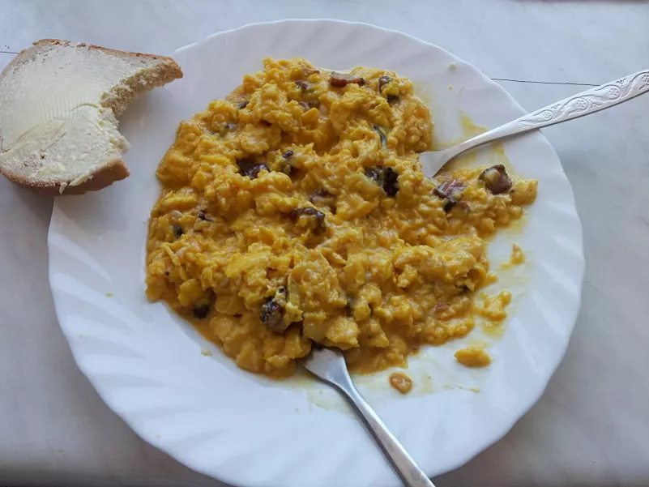
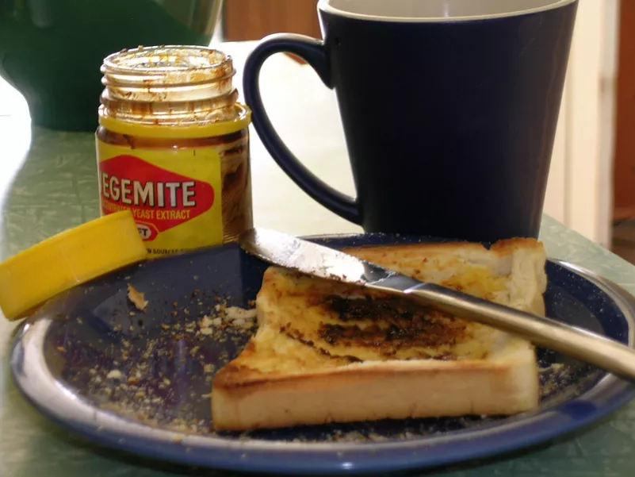

Italia
La colazioni italiana consiste in un caffè, tè oppure cappuccino accompagnato da una brioche oppure dei biscotti. C'è chi preferisce, una tazza di latte tiepido, accompagnata da cereali o biscotti.
Svezia
La colazione svedese consiste in un tipico pancake chiamato Pannkakor. Non contiene lievito. Viene accompagnato da marmellate di diverso tipo.
Polonia
La colazione polacca consiste in uova strapazzate coperte da fette di kielbasa (una salsiccia tradizionalmente fatta in casa) con l'aggiunta di un paio di pancakes di patate.
Giappone
La colazione Giapponese consiste in tofu, magari accompagnato da riso e pesce. essi vengono intinti nella salsa di soia come il resto dei piatti tipici.
Australia
La colazione australiana comprende la Vegemite. Si tratta di una crema salata composta da estratto di lievito che viene spalmata su fette di pane tostato.
Inghilterra
La colazione inglese consiste in fagioli, salsiccia, bacon, uova, funghi, hash browns e pane tostato. Il tutto è accompagnato da una fumante tazza di tè.